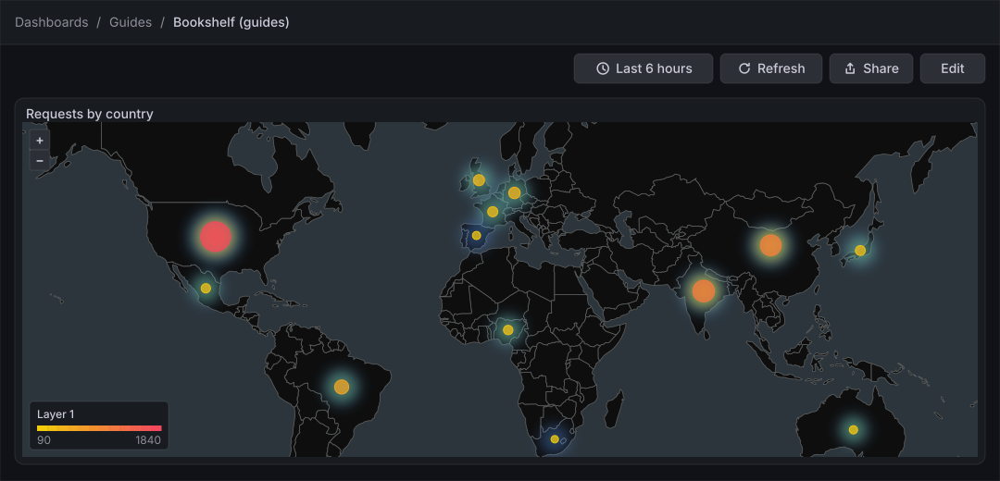
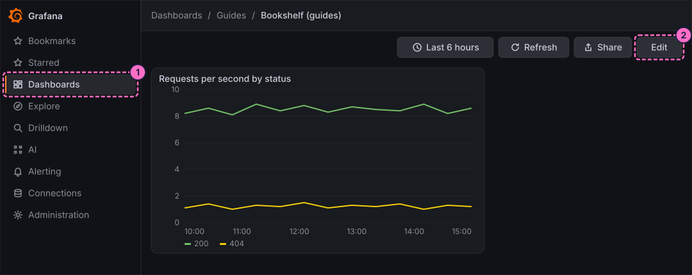
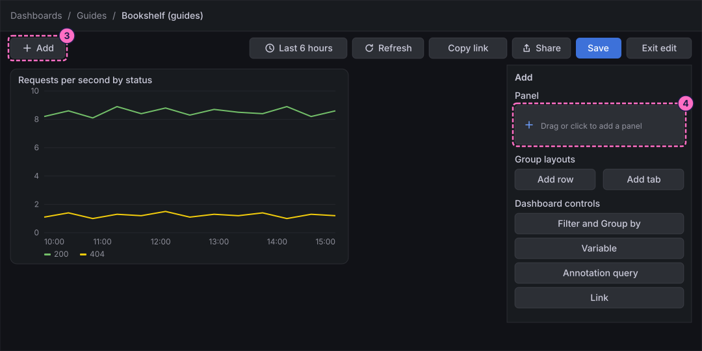
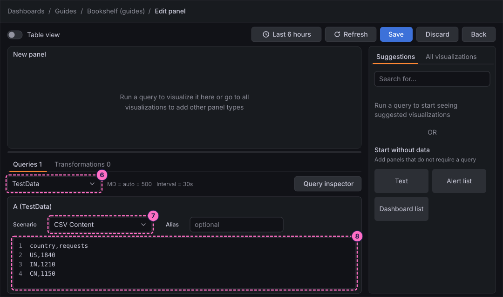
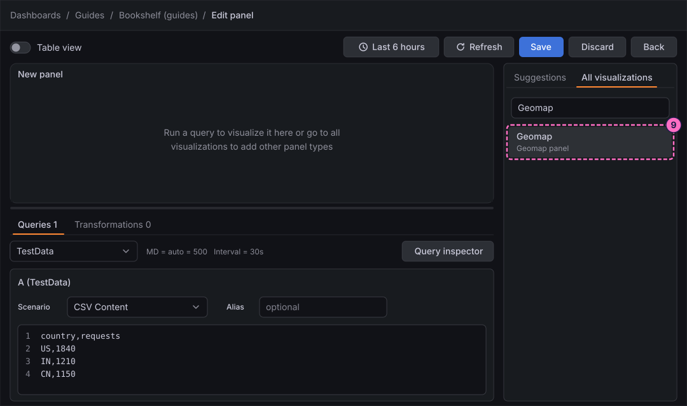
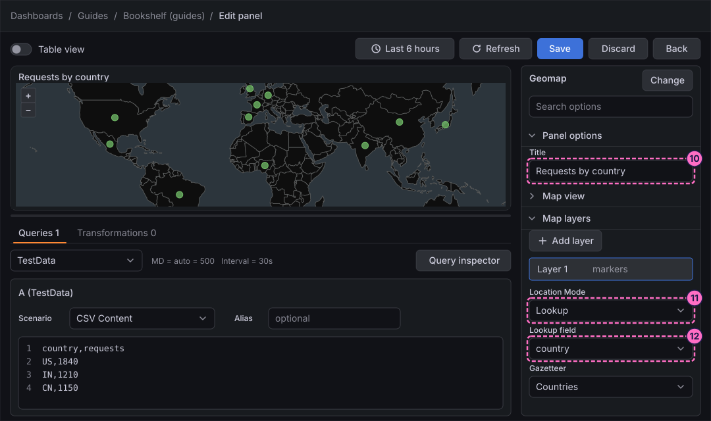
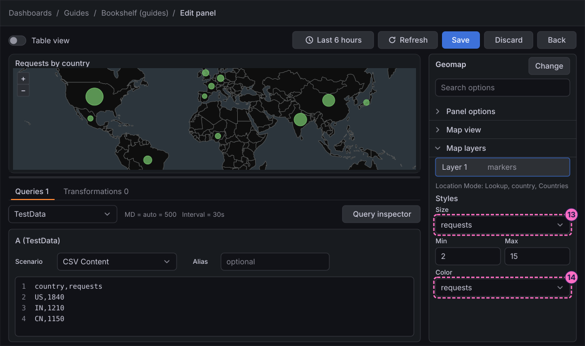
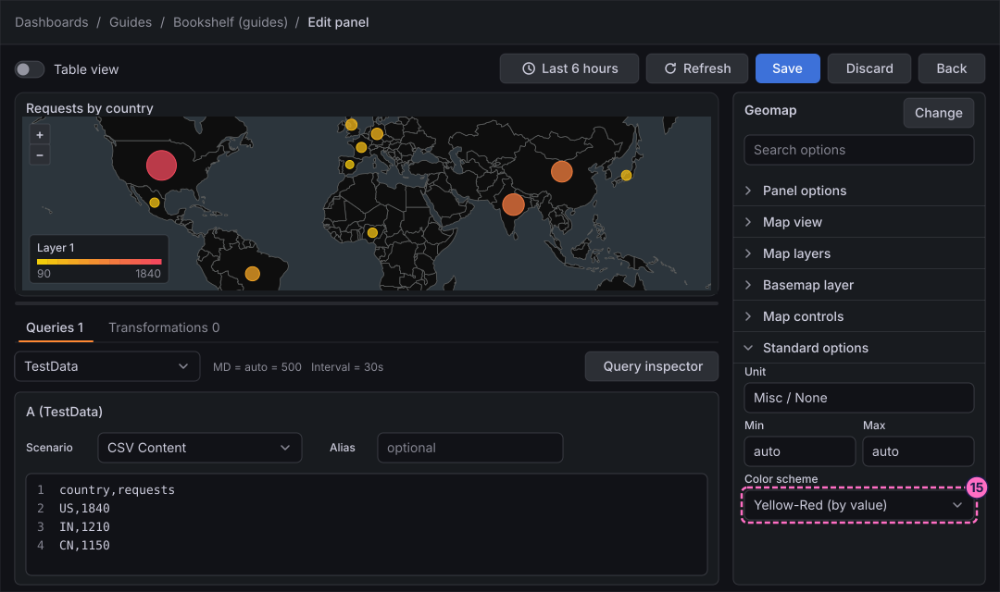
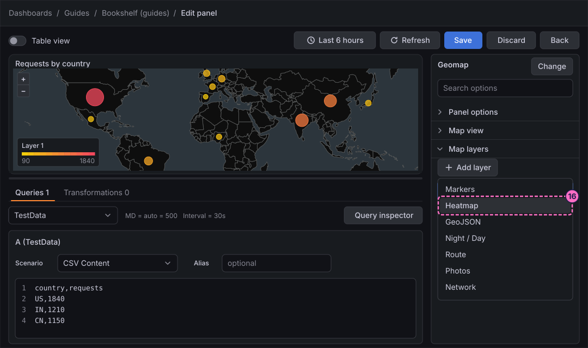
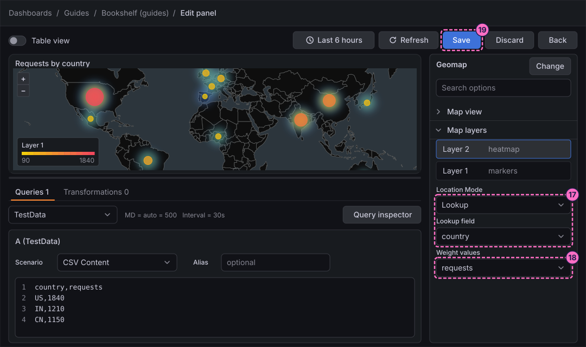

Grafana Guide: Geomap
|
This content was generated with the assistance of AI and should be verified against the official documentation before being relied on in production. |
Checked on 2026-11-11 against Grafana 13.3.x.
What you build
You add a Geomap panel, Requests by country, to the dashboard Bookshelf (guides). It shows a world map with one marker for each country in the data. The size and colour of each marker grow with the number of requests from that country, and a heatmap layer under the markers shows where the requests concentrate. The Bookshelf metrics of the lab carry no location, so the panel reads a small table of country codes and request counts that you type into the TestData data source. The same steps work for any query that returns a country code, a pair of latitude and longitude fields or a geohash.

Before you start
-
Start the Grafana profile of the hands-on lab and wait about a minute:
cd lab docker compose --profile grafana up -d -
Open http://localhost:3000, sign in as
adminwith the passwordadmin, and click Skip when Grafana 13.3 asks you to update the default password. -
Do the guide Create a dashboard and the first panel first: it creates the folder Guides and the dashboard Bookshelf (guides) that this guide extends.
-
The data source TestData is provisioned by the lab. It generates data inside Grafana, here from a CSV table, so the panel needs no traffic from the load generator.
-
The map itself, the Default base layer, comes from the CARTO basemap service over the internet, so the lab host needs internet access for the land and the coastlines; the markers draw without it. The country positions come from the Countries gazetteer that ships with Grafana.
-
The guide was checked on Grafana Enterprise 13.3.0 (the free image, no licence key). Editing dashboards needs the Editor or Admin role of the organization;
adminhas it. -
The figures are drawings of the Grafana 13.3 user interface, not screenshots, so small details can differ from your screen. The maps in the figures draw the real country outlines (Natural Earth, at a scale of 1:110 million) in the colours of the dark CARTO basemap that Grafana uses. A highlighted box with a number marks the control of the step with the same number.
Steps
The panel editor used here is the one shown in the map of the first dashboard guide; come back to that map when a control is not where a figure shows it. The options pane of Geomap is long: scroll it, or type an option name in Search options, when an option of a step is not in view.
Open the dashboard and add a panel
-
In the left navigation, click Dashboards, open the folder Guides and click Bookshelf (guides).
-
Click Edit at the top right.

-
In the toolbar, click Add.
-
In the Add pane of the right sidebar, click the Panel tile.

-
In the Panel pane that replaces the Add pane, click Edit visualization.
Type the country data
-
At the bottom of the panel editor, open the Data source list, which shows Prometheus, type
TestDataand choose TestData. -
In query A, open the Scenario list, which shows Random Walk, and choose CSV Content. An empty CSV editor appears.
-
Click inside the CSV editor and type the table below: a header line, then one line per country with its two-letter ISO 3166-1 code and a request count.
country,requests US,1840 IN,1210 CN,1150 BR,620 DE,410 GB,380 FR,300 JP,290 NG,250 MX,240 AU,160 ES,150 ZA,90
Choose Geomap and place the markers
-
In the right column, click the All visualizations tab, type
Geomapin Search for… and click Geomap ("Geomap panel"). The preview turns into a world map with the first data layer, Layer 1, of type Markers.
-
The right column becomes the options pane, headed Geomap. Under Panel options, type
Requests by countryin Title. -
Under Map layers, with Layer 1 (markers) selected, open Location Mode and choose Lookup ("Specify Gazetteer and lookup field"). With the default, Auto, Grafana looks for fields named like
latitude,longitudeorgeohashand finds none in this table. -
Open Lookup field and choose
country. Leave Gazetteer at Countries: it turns each two-letter code into the position of that country, and one small green marker appears on each country of the table.
Size and colour the markers by value
-
Further down in the same layer, under Styles, open Size, which shows Fixed value, and choose
requests. Min (2) and Max (15) appear: the country with the fewest requests gets the smallest marker and the one with the most gets the largest. -
Open Color, which shows Fixed color, and choose
requests, so that the colour of each marker also follows its value.
-
The colours come from the field settings. Open Standard options, open Color scheme, which shows From thresholds (by value), and choose Yellow-Red (by value). The markers go from yellow for few requests to red for many, and the legend Layer 1 shows the range from
90to1840at the bottom left of the map.
Add a heatmap layer and save
-
Under Map layers, click Add layer and choose Heatmap ("Visualizes a heatmap of the data"). The new layer, Layer 2 (heatmap), is added above Layer 1 and selected.

-
A new layer has its own location settings. Set Location Mode to Lookup and Lookup field to
country, as in steps 11 and 12. -
Open Weight values and choose
requests, so that a country with more requests glows hotter. Radius, Blur and Opacity below it change the size and softness of the glow. -
Click Save in the header of the editor.

-
In the Save dashboard drawer, click Save.
-
Click Back to return to the dashboard.
-
Click Exit edit. If Grafana 13.3.0 shows the dialog Unsaved changes, click Save and click Save again in the drawer, as in the first dashboard guide.
Check the result
Open Dashboards → Guides → Bookshelf (guides). The panel Requests by country must show the world map with thirteen markers: the largest and reddest on the United States, India and China, the smallest and yellowest on South Africa. Hover a marker: the tooltip lists the country and requests of that row. Drag the map and use the + and − buttons at the top left to zoom.
The data is typed into the query, so the load generator has no effect on this panel; change a number in the CSV editor of the panel to see the marker change.
Variations
-
Use positions instead of countries: add
latandloncolumns to the CSV, with a row for each city, and set Location Mode to Coords ("Specify latitude and longitude fields"), then picklatandlonas the two fields. -
Start the panel on one region: under Map view, open View and choose Fit to data, or a region such as Europe, and set Zoom.
-
Change the map behind the data: under Basemap layer, open Layer type and choose OpenStreetMap, CARTO basemap (with a light or dark theme), ArcGIS MapServer or XYZ Tile layer.
-
Show a text next to each marker: under Styles, set Text label to the field
requests. -
Use real data: any query that returns a two-letter country code works with the same Lookup settings, for example a PostgreSQL table of orders by country added with the guide Add a data source.
What can go wrong
| Symptom | Cause | Fix |
|---|---|---|
The layer shows Unable to find location fields |
Location Mode is Auto, and the table has no field named like a latitude, a longitude or a geohash. |
Set Location Mode to Lookup and Lookup field to |
The map shows land but no markers |
The codes do not match the gazetteer: a lower-case code, a space after the comma, or a three-letter code. |
Type upper-case two-letter codes without spaces, or pick the matching Gazetteer. |
The panel shows markers on a blank background |
The lab host cannot reach the CARTO basemap service. |
Check the internet access of the host, or choose a basemap that your network can reach under Basemap layer. |
All markers have the same size and colour |
Size and Color are still a fixed value and a fixed colour. |
Set both to the field |
The heatmap layer draws nothing |
The new layer still uses Location Mode Auto. |
Set Location Mode to Lookup and Lookup field to |
Exit edit keeps showing Unsaved changes |
Grafana 13.3.0 raises the dialog even after a save. |
Click Save, and Save again in the drawer; the dialog does not return once edit mode has closed. |
Clean up
Keep the panel, or remove it: open the dashboard, click Edit, open the menu of the panel Requests by country and delete it, then save the dashboard.
Where to go next
-
Previous guide: State timeline, status history, logs and text panels.
-
Next guide: Thresholds, value mappings, overrides and data links, which goes deeper into the colour schemes and thresholds used here.
-
Reference: Grafana Logs, Traces and Special Panels covers every option of Geomap.
-
The Kibana counterpart is Kibana Guide: Maps.
Sources
-
Natural Earth: 1:110m cultural vectors (the country outlines of the figures).